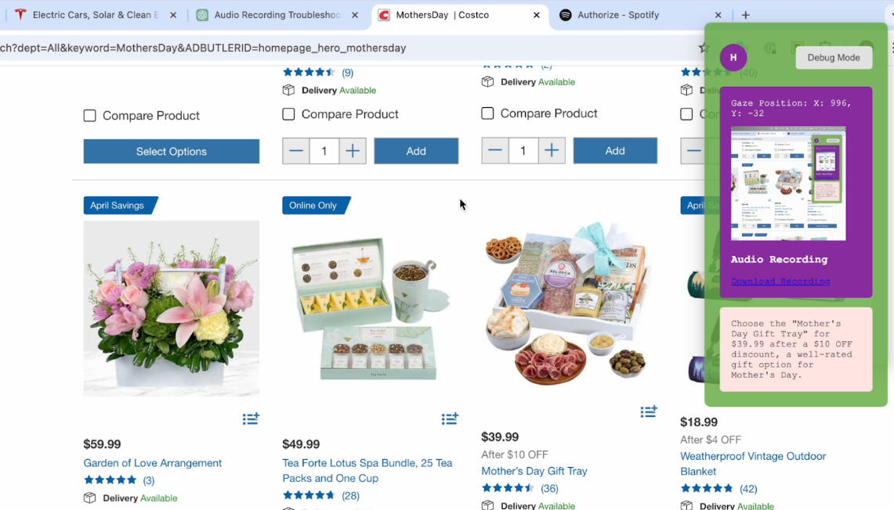

Hyrax
Multimodal AI copilot

- Built with Sneha Silwal as part of the OpenAI x PearVC hackathon (April ‘24)
- Cooked up a proof-of-concept using eye tracking to crop where users are focusing, giving them contextual answers to their questions
- Used Electron, WebGazer, OpenAI APIs and a bunch of hacks ;-)
- Demo